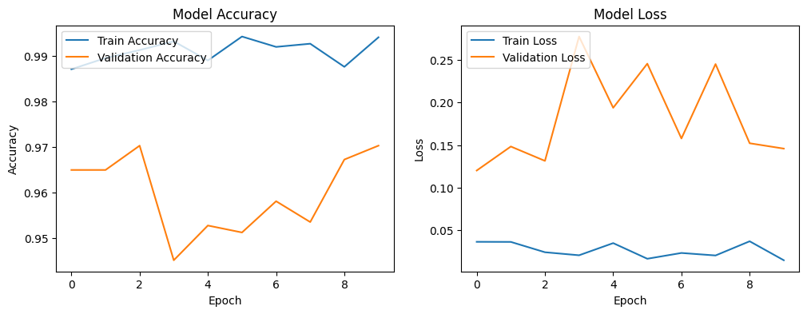

Oque é o projeto?
Desenvolvemos uma rede neural com 97% de precisão, capaz de detectar e classificar tumores cerebrais. Utilizando TensorFlow, Flask-API e Python, criamos um modelo robusto que facilita diagnósticos detalhados, essenciais para tratamentos específicos. Além disso por estar integrado ao Flask-API, nosso modelo está pronto para ser implementado em aplicações web, tornando-se uma ferramenta acessível e eficiente para profissionais de saúde.

Importância do projeto
O uso de redes neurais na detecção de tumores cerebrais representa um avanço crucial na medicina, oferecendo diagnósticos mais rápidos e precisos para uma das formas mais agressivas de câncer. As técnicas tradicionais, como ressonâncias magnéticas, dependem da análise humana, o que pode levar a variações e erros. Redes neurais convolucionais, por outro lado, são altamente eficazes em identificar padrões sutis em imagens, permitindo diagnósticos mais precoces e precisos, aumentando as chances de tratamento bem-sucedido. Além disso, essa tecnologia pode democratizar o acesso a diagnósticos avançados, especialmente em áreas com recursos médicos limitados.
Impacto no Brasil
A aplicação de redes neurais na detecção de tumores cerebrais é crucial para o SUS, melhorando o diagnóstico precoce e a eficiência do sistema. Com essa tecnologia, o SUS pode reduzir o tempo de espera e aumentar a precisão na identificação de tumores, especialmente em áreas com acesso limitado a especialistas. Isso não apenas alivia a sobrecarga dos profissionais de saúde, mas também otimiza o uso dos recursos, reduz custos e salva vidas ao assegurar que os pacientes recebam o tratamento adequado no momento certo.